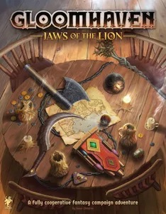

Spil
Hjá Spilabúðinni eigum við öll helstu spilin! Hér eru vinsælustu spilin hjá okkur:
- Brass: Birmingham (2018)
- Pandemic Legacy: Season 1 (2015)
- Gloomhaven (2017)
- Ark Nova (2021)
- Twilight Imperium: Fourth Edition (2017)
- Dune: Imperium (2020)
- Terraforming Mars (2016)
- War of the Ring: Second Edition (2011)
- Star Wars: Rebellion (2016)
- Gloomhaven: Jaws of the Lion (2020)
- Spirit Island (2017)
- Gaia Project (2017)
- Twilight Struggle (2005)
- Through the Ages: A New Story of Civilization (2015)
- Great Western Trail (2016)
- Build networks, grow industries, and navigate the world of the Industrial Revolution.

- Geek Rating: 8.414
- Nánari Lýsing
- Verð:
- Mutating diseases are spreading around the world - can your team save humanity?

- Geek Rating: 8.377
- Nánari Lýsing
- Verð: 10000
- Vanquish monsters with strategic cardplay. Fulfill your quest to leave your legacy!

- Geek Rating: 8.349
- Nánari Lýsing
- Verð: 25000
- Plan and build a modern, scientifically managed zoo to support conservation projects.

- Geek Rating: 8.335
- Nánari Lýsing
- Verð: 8000
- Build an intergalactic empire through trade, research, conquest and grand politics.

- Geek Rating: 8.239
- Nánari
Lýsing
- Verð: 15000
- Influence, intrigue, and combat in the universe of Dune.

- Geek Rating: 8.23
- Nánari Lýsing
- Verð: 9000
- Compete with rival CEOs to make Mars habitable and build your corporate empire.

- Geek Rating: 8.21
- Nánari Lýsing
- Verð: 8500
- The Fellowship and the Free Peoples clash with Sauron over the fate of Middle-earth.

- Geek Rating: 8.187
- Nánari
Lýsing
- Verð: 11000
- Strike from your hidden base as the Rebels—or find and destroy it as the Empire.

- Geek Rating: 8.17
- Nánari Lýsing
- Verð: 9000
- Vanquish monsters with strategic cardplay in a 25-scenario Gloomhaven campaign.
- 
- Geek Rating: 8.159
- Nánari Lýsing
- Verð: 10000
- Island Spirits join forces using elemental powers to defend their home from invaders.

- Geek Rating: 8.145
- Nánari Lýsing
- Verð: 5000
- Expand, research, upgrade, and settle the galaxy with one of 14 alien species.

- Geek Rating: 8.111
- Nánari Lýsing
- Verð: 3000
- Relive the Cold War and rewrite history in an epic clash between the USA and USSR.

- Geek Rating: 8.066
- Nánari Lýsing
- Verð: 6000
- Rewrite history as you build up your civilization in this epic card drafting game!

- Geek Rating: 8.055
- Nánari
Lýsing
- Verð: 8000
- Use strategic outposts and navigate danger as you herd your cattle to Kansas City.

- Geek Rating: 8.022
- Nánari Lýsing
- Verð: 10500